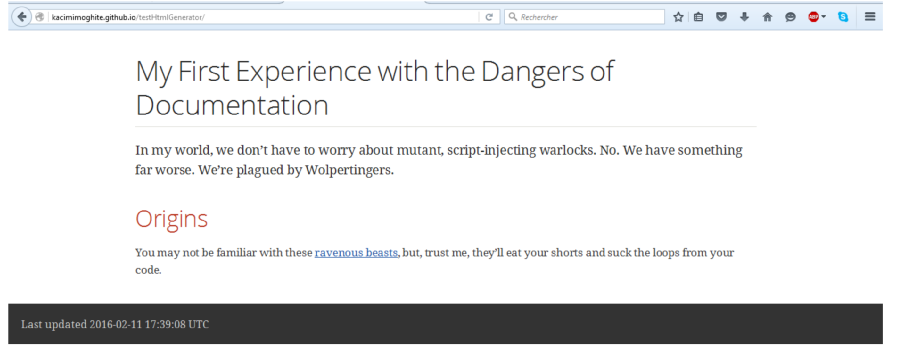
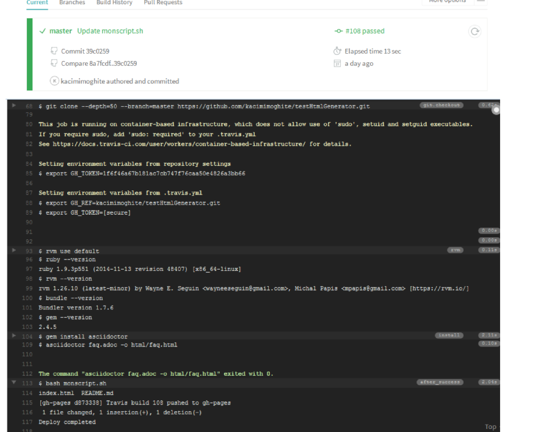

Déploiement sur Github avec Travis
Utiliser Travis-ci pour générer des pages Html à partir des fichier .adoc, et les pousser vers les pages Github.- Pré-requis
- Activation du Travis-ci pour le projet Github
- Création d'une branche gh-pages sur le dépôt Github
- création du token d'accès pour pouvoir publier le Html
- Token d’acces et .travis.yml Après avoir récupéré le token d’accès on va le crypter pour que Travis puisse l’utiliser :
- Résultat sur Travis-CI Sur Travis la génération du html et le deployement sur github passent avec succès.
- Résultat sur GitHub pages 
travis encrypt -r kacimimoghite/testHtmlGenerator GH_TOKEN=[le token d accès]
Après avoir récupéré ce token crypté, on l'ajoute au fichier travis.yml et on installe Asccidoctor pour convertir le .adoc en html, install:
- gem install asciidoctor
script:
- asciidoctor faq.adoc -o html/faq.html
env:
global:
- GH_REF: kacimimoghite/testHtmlGenerator.git
- secure:
after_success:
- bash monscript.sh
Pour la partie after success on utilise un script qui récupère le projet, copie le html avant de l’envoyer vers GitHub.
#!/bin/bash
cp -R html $HOME/html
#configuration
cd $HOME
git config --global user.email "moghitkacimi@gmail.com"
git config --global user.name "kacimimoghite"
#clone branch gh-pages
git clone --quiet --branch=gh-pages https://${GH_TOKEN}@github.com/${GH_REF} gh-pages > /dev/null
cd gh-pages
ls
cp $HOME/html/faq.html ./index.html
git add -f .
git commit -m "Travis build $TRAVIS_BUILD_NUMBER pushed to gh-pages "
git push -fq origin gh-pages > /dev/null
n echo -e "Deploy completed\n"
#fi
